Filter log
Apromore allows us to apply various filters to slice and dice an event log in different ways and focus on the filtering results. For example, we can use it to segregate specific process cases that fulfill certain conditions, e.g., all cases that transit via a particular activity or segregate two variants of the same process, e.g., the first variant containing slow cases and the second one containing fast cases.
We can access Log filtering from various places:
In the Portal, select an event log and click on “Filter log” from the Discover menu.
In the Performance Dashboard, click on the “Filter” menu on the top-right corner or select.
In the Custom View of the Performance Dashboard, select Advanced and then “Filter log” from the Edit frame.
In Process Discoverer, click on the “Filter” button from the top buttons bar, as shown below.
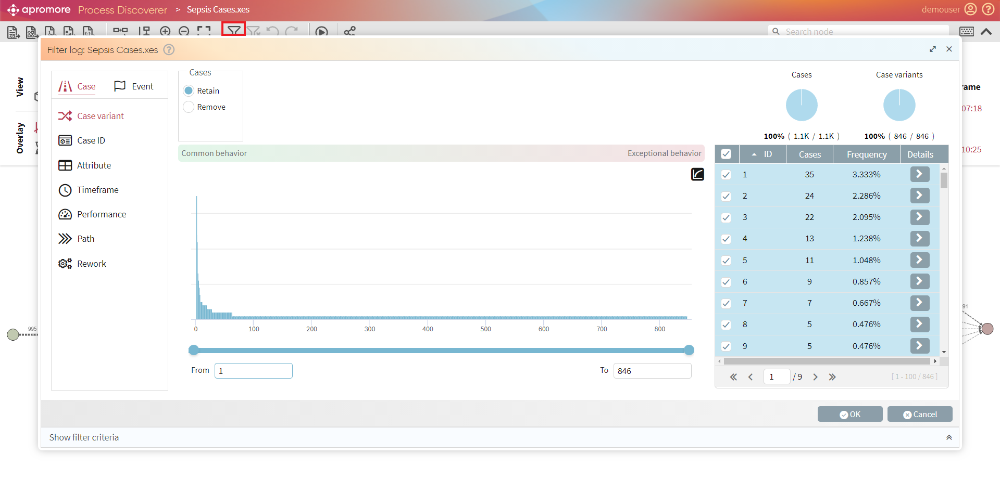
No matter where we invoke the filter from, the filter editor showed above will pop up.
Filter types: Case vs. Event
There are two main filter types supported by Apromore: Case Filter and Event Filter. Both filter types allow us to create a filter based on particular conditions on the cases or events.
More specifically:
A case filter allows us to “slice” a log, i.e., to retain a subset of the process cases, e.g., those cases that contain a specific activity;
An event filter allows us to “dice” a log, i.e., to retain a fragment of the process across multiple cases, e.g., an element containing two specific activities.
For the case and event filters, we can set several filter criteria. Let us take a look at the case filters first.
Case > Performance filter
To understand a process, we might want to retain or remove cases that fulfill specific performance requirements, e.g., retain all cases that complete within one month. We can use the “Performance” filter for this purpose. For example, the below screenshot captures only those cases that last no more than one month in duration.
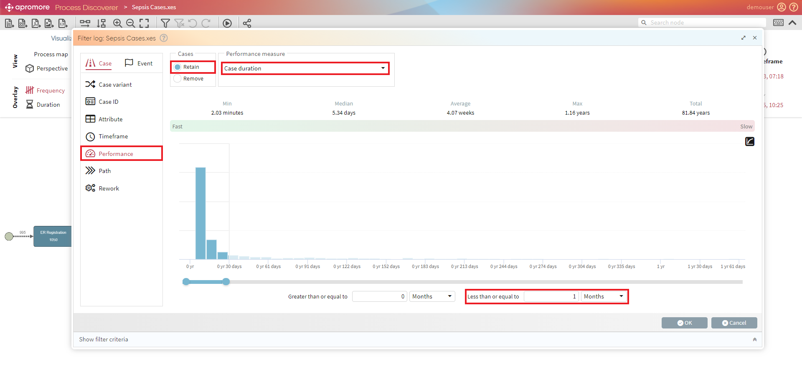
We can decide whether to retain or remove the cases that fulfill each filter’s condition set in the filter criteria. Concerning the example above, we may determine whether to retain or remove all cases that complete in one month.
We create a filter by clicking Apply. We can observe that 80.4% of the cases fulfill this requirement.

We can use the Arc duration metric from the Performance measure drop-down menu to perform the analysis based on the duration of the path between different nodes of type activity, resource, or other event attributes.
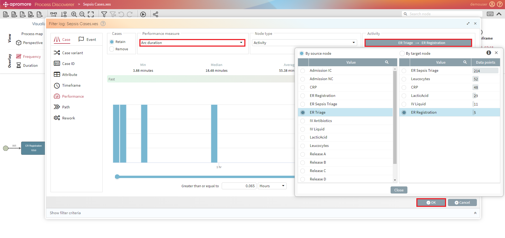
In the example above, we decide to retain all cases where the arc duration between ER Triage and ER Registration is not more than 3,25 hours. The filter is created by clicking Apply.
In addition to the arc duration, we can also select a node duration performance metric to analyze performance by retaining or removing different nodes of type activity, resource, or different event attributes.
We can also filter out cases based on case length (number of activity instances in the case). Thus, in the example below, we retain all cases whose length is between 3 to 15 activity instances.
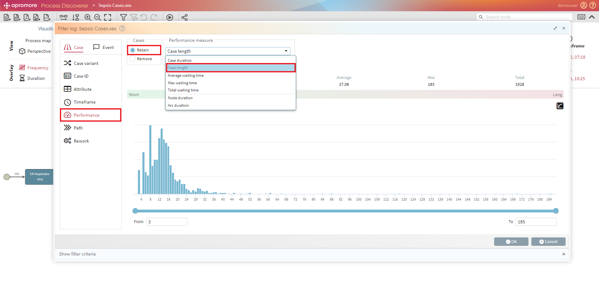
Case > Attribute filter
To retain or remove all the cases that include a specific attribute, we can use the Attribute filter. For example, we want to retain only those whose attribute Age is between 20 to 30.
For this, click on the Attribute filter. Select the age attribute from the drop-down list and tick the specific values to retain. Finally, click on Apply. In the example below, the result would be only those cases where the age attribute is between 20 to 30.
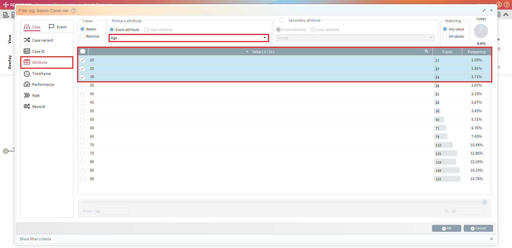
Bemerkung
For the numerical attributes only, there is an alternative to retain or remove cases by choosing the range of values using the „From“/“To“ slider at the bottom of the filter window. We will see the list of values (categories) for categorical attributes like resources or product types and choose which specific values to retain or remove.
We can also retain/remove cases that include a secondary attribute.
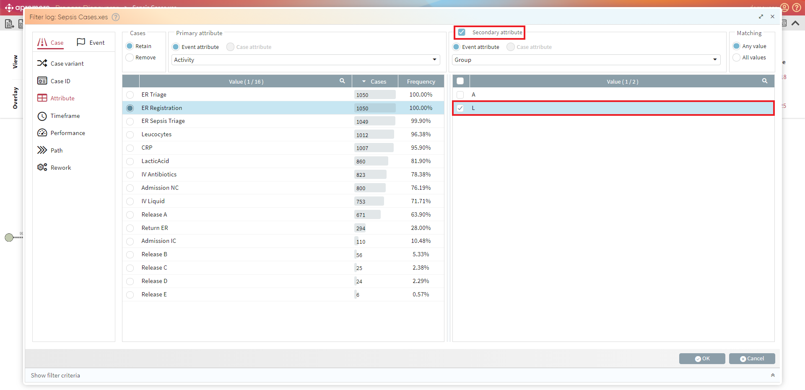
In the given example, we retain cases where resource group L (Secondary Attribute) performs an activity ER Registration.
Bemerkung
We can also filter cases that include a specific case attribute as a primary/secondary attribute.
In addition, the Matching section allows us to set whether cases should be retained that satisfy any of the selected values (default selection) or all the selected values.
Case > Path filter
We can use the Path filter to identify bottlenecks or analyze the transitions between the activities performed. For example, click on the Path filter to retain those cases where the activity ER Registration eventually follows Release A.

We can also filter out those cases where the same resource group is performing the activities. This can be done by checking the Require checkbox and selecting Group from the drop-down list of the Path filter.

The time between the occurrence of activities can also be captured by using the Lower and Upper bound fields of the Path filter. For example, retain those cases where the time interval between ER Registration and Release A is greater than 2 hours.
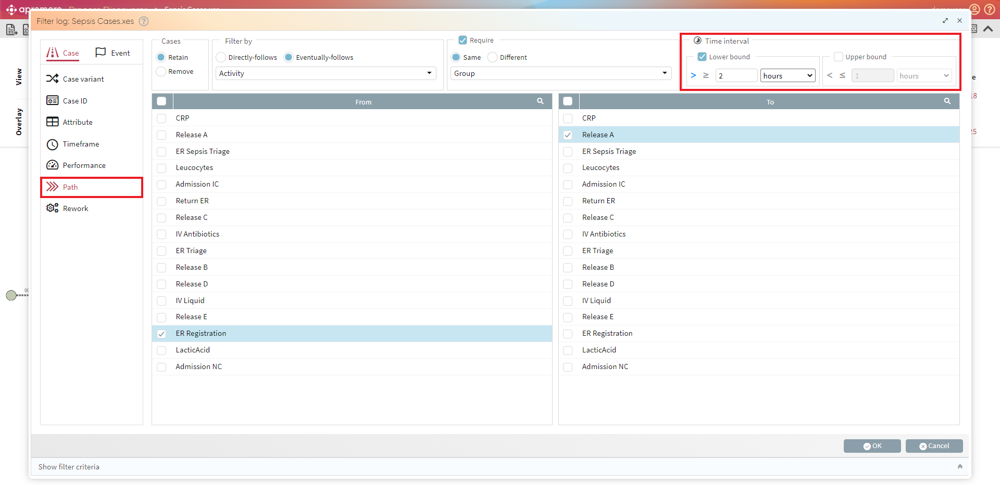
Case > Timeframe filter
The Timeframe filter allows us to retain or remove those cases that are „active in“, „contained in“, „start in,“ or „end in“ a particular time period of the log. We can set the desired timeframe by entering the Start and End dates or using the time slider at the bottom of the Filter criteria window.
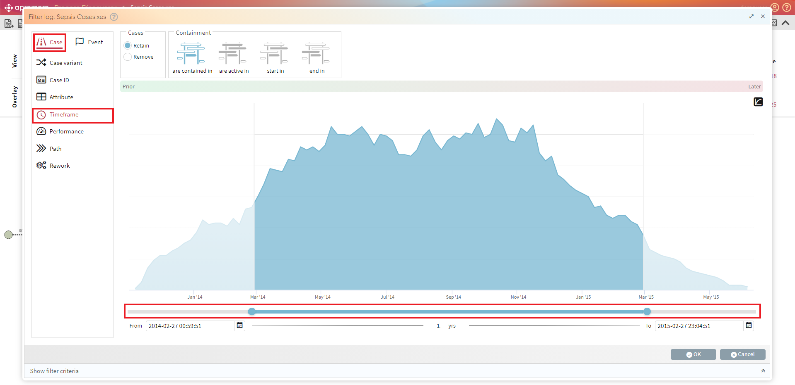
Case > Rework & repetition filter
In some processes, certain activities are repeated – this can be done in direct repetitions or through the back and forth between two or more activities.
A Rework filter can be used to isolate repetitions so that only those process sequences are retained or removed that contain specific repetitions. We can also set the Lower and Upper bound for the reworked activities.
When setting multiple conditions on repeated activities, we can define whether the filter criterion should satisfy any condition or all conditions on the repeated activities.
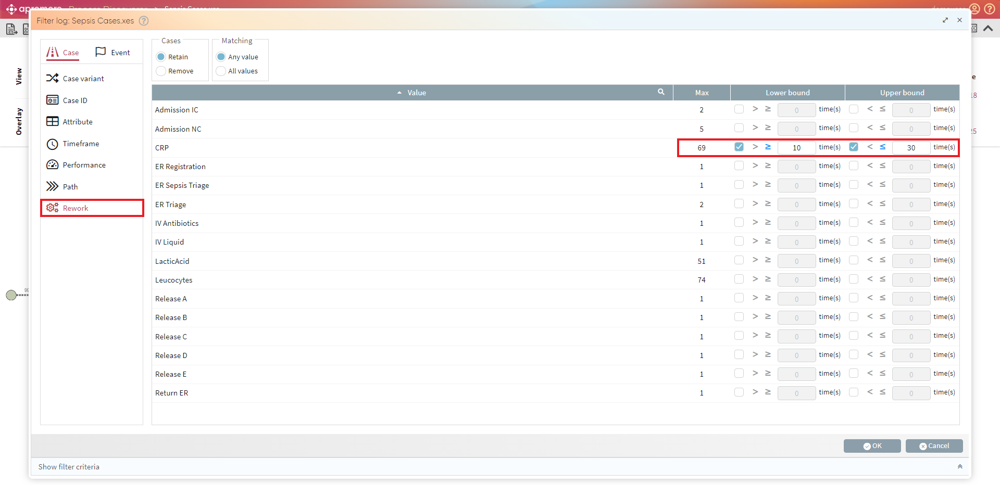
Case > Case ID filter
We can choose to retain or remove cases based on a particular case ID using the Case ID filter. In the below screenshot, we are retaining those cases with case ID ‘AA’. The result would include the activities performed by the case ID ‘AJ’.
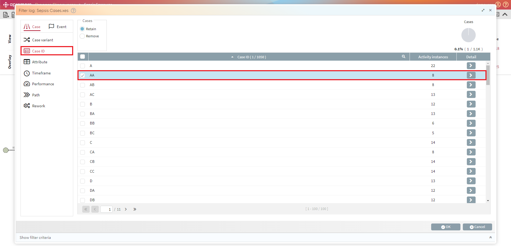
Case > Variant filter
We can use the Case variant filter to retain or remove the case variants based on a particular condition by entering the From variant and To variant values or using the time slider at the bottom of the Filter criteria window. For example, we want to retain up to 50 case variants to analyze the process’s most common behavior.

Let us now take a look at the filter criteria for event filters. We can use the Event filter to dice the log, i.e., isolate a specific fragment of the process across all cases. The Event filter allows us to filter by Attribute and Timeframe.
Event > Attribute filter
The Attribute filter of type Event allows us to retain or remove those events that satisfy the values of a specific event attribute. For example, we may want to remove those events whose activity label is „ER Registration“. This means effectively to dice the log in such a way to exclude all events related to activity „ER Registration“.
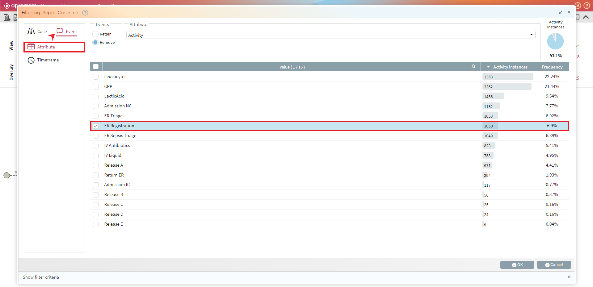
Any attribute value can be used to set conditions. For example, in order to remove all events where the value of “DiagnosticIC” is false, we can select DiagnosticIC from the drop-down list of event attributes and then select the specific value we may want to retain or remove.
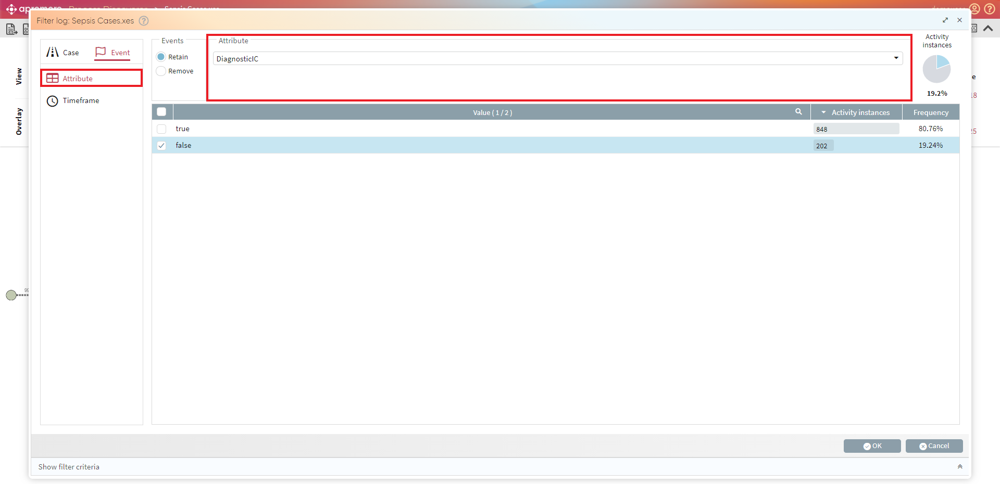
Event > Timeframe filter
The second type of filter criterion for events allows us to retain or remove events based on a particular timeframe. We can set the desired timeframe by entering the Start and End dates or using the time slider at the bottom of the Filter criteria window.

Managing filter criteria
Apromore allows us to create one filter on top of another. We can do this by clicking the Create button.

In order to edit an existing filter, select the filter and click on Edit.
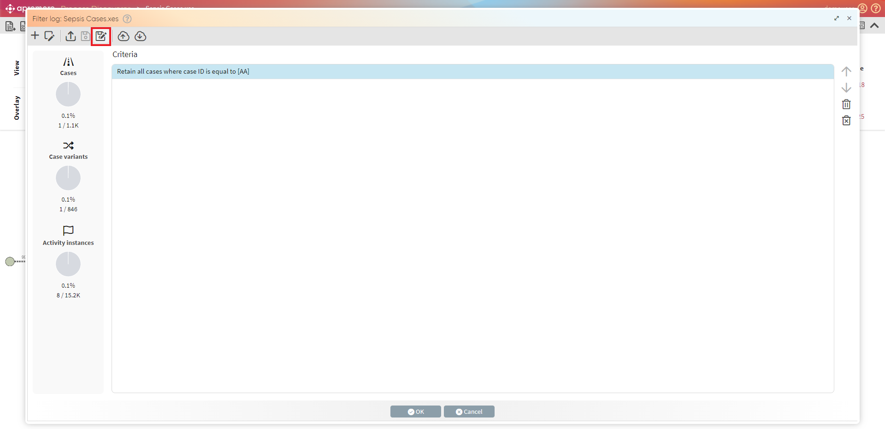
We can change the sequence of the filters by using the top-down arrows on the right side. In order to delete a single filter, click on  button. Alternatively, to delete all the filters at once click the last button - .
button. Alternatively, to delete all the filters at once click the last button - .
{kind=link}
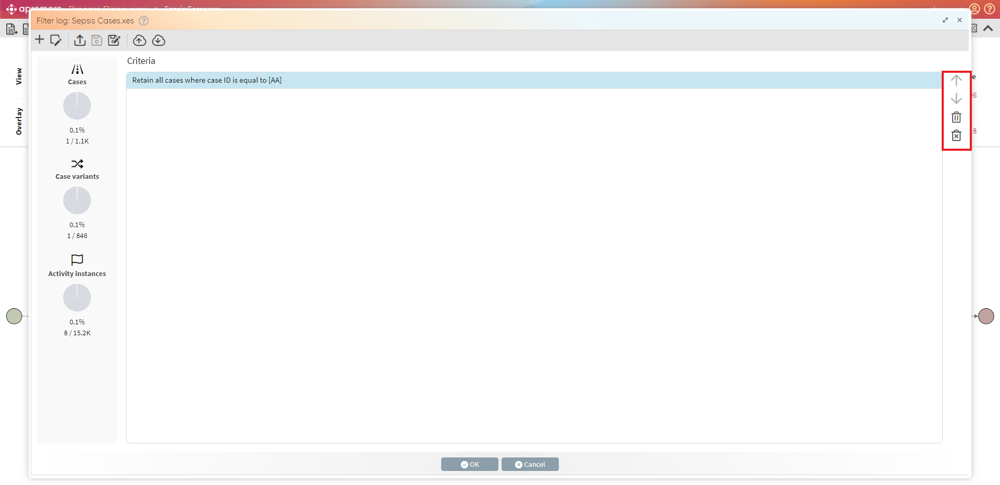
To open a saved filter click on Open button.
Bemerkung
In the filter window, a red exclamation mark next to the filter name means that another user has made changes to the filter. Click on it to save/discard changes.
{kind=link}
We can make changes to an existing filter and then click on Save to save it.

The Save as button is used to save a new filter.
We can also upload a filter by clicking on the Upload button. Select the filter (.json file format) from the file explorer.
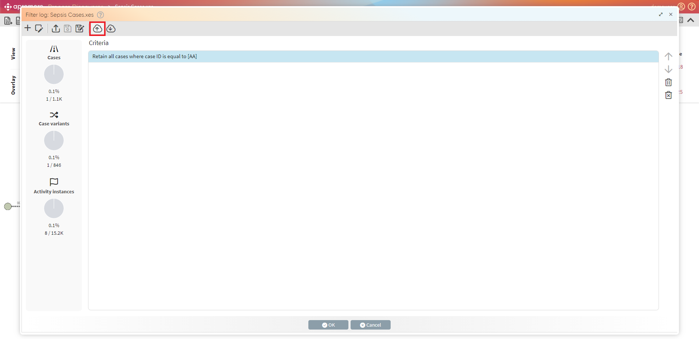
A filter can also be downloaded using the Download button.
We can edit the name of the filter before downloading it.
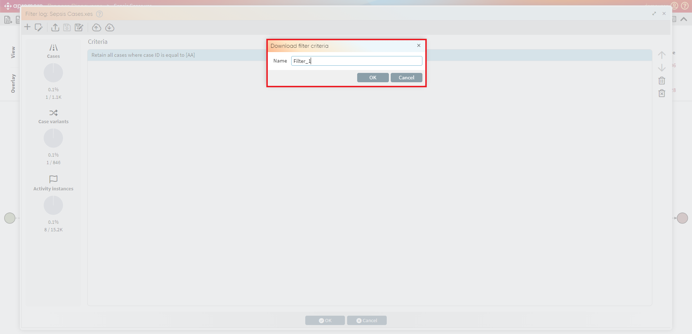
Undo/Redo filters
The application of filters can be applied and removed by using the Undo/Redo buttons. To undo a filter criterion, click on Undo filter.
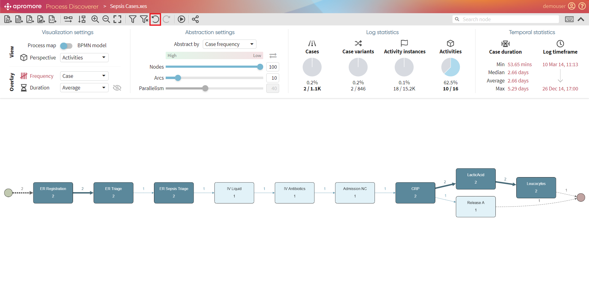
To reapply the previous filter, click on Redo.
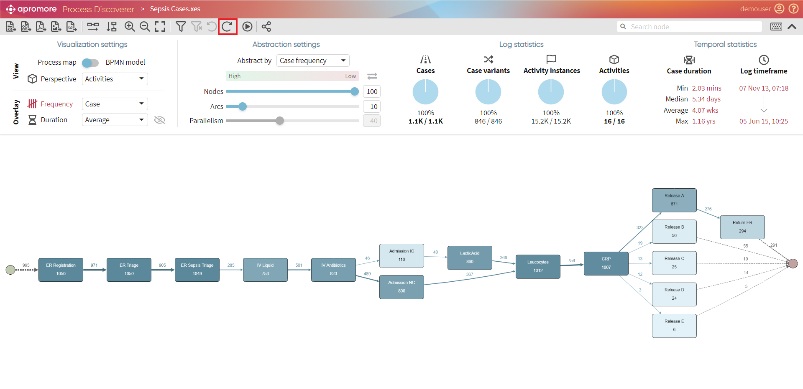
Clear all filters
To clear all the applied filters, click on the Clear all filters button.

Shortcuts
Bemerkung
Right-click on an arc: remove all cases containing the selected directly-follows relation
Shift + right-click on arc: filter cases based on this arc’s duration (from any perspective)
CTRL + Right-click on an arc: retain only cases containing the selected directly-follows relation
Right-click on a node: remove all cases with an event containing the selected attribute
CTRL + Right-click on a node: retain only cases with an event containing the selected attribute
Alt (Option) + Right-click on a node: remove all events containing the selected attribute
Alt (Option) + CTRL + Right-click on a node: retain only events containing the selected attribute
Shift + right-click on a node: filter cases based on this node’s duration (from any perspective)
Shift + CTRL+ right-click on a node: filter cases using this node as a primary attribute.
CTRL + Z: Undo
CTRL + Y: Redo